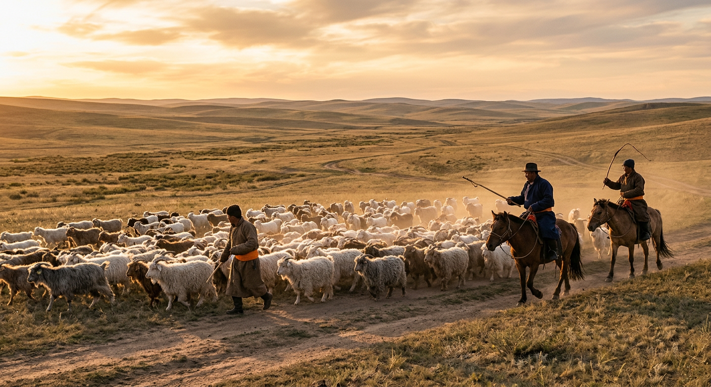
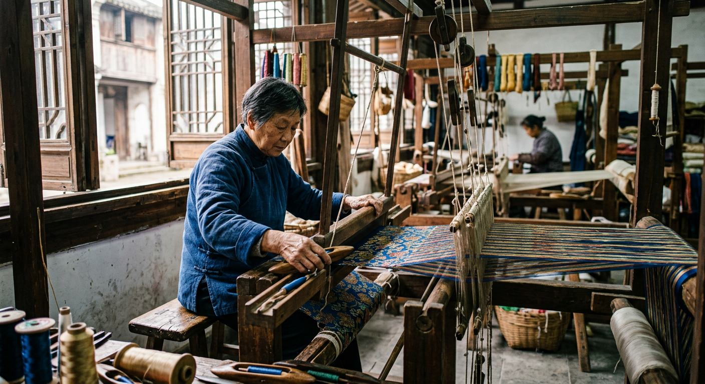
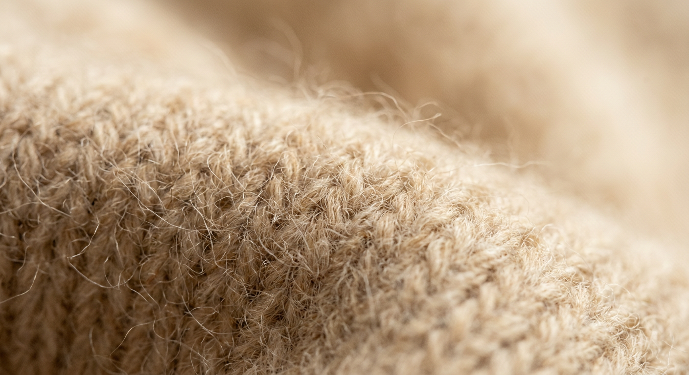

Nous ne vendons pas des manteaux. Nous vendons des années de port, de douceur et d'élégance silencieuse. Tout commence par le choix de la fibre.
Chaque matière a ses forces. La laine apporte la structure, la durabilité, la tenue dans le temps. Le cachemire apporte la douceur incomparable, la légèreté, le toucher soyeux contre la peau. En mariant les deux à parts égales, nous obtenons un manteau qui tient ses promesses saison après saison — sans jamais perdre de sa grâce.
Le cachemire provient du duvet des chèvres Capra Hircus, élevées sur les hauts plateaux de Mongolie-Intérieure. À cette altitude, les écarts de température extrêmes — jusqu'à –40°C en hiver — poussent ces chèvres à développer un sous-poil d'une finesse et d'une douceur exceptionnelles.
Chaque chèvre ne produit que 150 à 200 grammes de cachemire par an. C'est cette rareté, combinée à la qualité de la fibre, qui explique la valeur du matériau. Pour un seul manteau MAUDÉ, plusieurs chèvres contribuent leur duvet annuel.
Nous travaillons avec des partenaires établis dans cette région depuis des décennies, garantissant une traçabilité totale de la fibre.

Surnommée la « Venise de l'Orient », Suzhou est depuis l'Antiquité la capitale mondiale du textile précieux. La soie impériale, la broderie fine, le cachemire travaillé — tout ce qui demande patience et précision trouve ici ses maîtres.
Nos ateliers partenaires à Suzhou maîtrisent l'art du tissage du cachemire selon des techniques transmises de génération en génération. Chaque manteau MAUDÉ passe par plus de 40 étapes de fabrication avant d'être prêt à voyager jusqu'à vous.
Nous visitons régulièrement nos ateliers. Nous connaissons les personnes qui fabriquent vos manteaux. C'est une relation de confiance, pas une commande anonyme.
La récolte
Au printemps, les éleveurs peignent délicatement le sous-poil des chèvres à la main. Le duvet est ensuite trié, nettoyé et peigné pour séparer les fibres les plus longues et les plus fines — seules celles-ci entreront dans la composition de nos manteaux.
Le filage & tissage
Les fibres sont filées, teintes dans des bains minutieusement contrôlés, puis tissées avec la laine sélectionnée pour créer notre mélange 50/50. Ce processus exige une précision d'horloger : la tension des fils, la densité du tissu, le grammage final sont vérifiés à chaque étape.
La confection
Le tissu est ensuite coupé et cousu par nos artisans à Suzhou. Chaque pièce est contrôlée individuellement avant expédition. Les coutures, les boutonnières, le tombé, les finitions — rien n'est laissé au hasard. Un manteau MAUDÉ ne quitte l'atelier que lorsqu'il est parfait.
Pourquoi mélanger laine et cachemire plutôt que du 100% cachemire ?
Le 100% cachemire est spectaculaire au toucher — mais il est fragile. La laine apporte une résistance et une structure que le cachemire seul ne peut garantir dans un manteau porté quotidiennement. Notre mélange 50/50 combine le meilleur des deux : la douceur du cachemire, la durabilité de la laine.
Comment savoir si un cachemire est de qualité ?
Une fibre de qualité supérieure mesure moins de 15 microns d'épaisseur — à titre de comparaison, un cheveu humain mesure 70 microns. Plus la fibre est fine, plus le tissu est doux et léger. Nous sélectionnons exclusivement des fibres longues et fines, ce qui limite le boulochage et prolonge la durée de vie du manteau.
Est-ce que le manteau va boulochonner ?
Tout cachemire, même le meilleur, peut légèrement boulochonner au début — c'est un signe que les fibres courtes restantes s'éliminent naturellement. Après quelques ports, le phénomène disparaît et le tissu révèle sa douceur définitive. Utilisez une pierre à cachemire douce pour éliminer les bouloches si nécessaire.
Combien de temps va durer mon manteau MAUDÉ ?
Avec un entretien approprié, un manteau en laine et cachemire de qualité se porte 10 à 15 ans. C'est l'inverse de la fast fashion : vous payez plus une fois, mais vous divisez le coût par dix. Un manteau MAUDÉ porté 10 ans revient à moins de 40€ par an.
Il y a des choses qu'on ne peut pas expliquer, seulement ressentir. Le moment où vous enfilez un manteau en laine et cachemire de qualité pour la première fois — cette enveloppe douce et chaude qui épouse immédiatement votre silhouette — c'est une expérience unique.
C'est précisément pourquoi nous proposons des retours gratuits sous 30 jours. Nous savons que toucher change tout. Si le manteau ne vous enveloppe pas comme vous l'espériez, renvoyez-le. Mais notre expérience nous dit que vous ne voudrez plus l'enlever.

Aérer plutôt que laver
Entre les ports, suspendez votre manteau à l'air libre une nuit. Le cachemire s'auto-régénère — l'humidité naturelle de l'air suffit à lisser les fibres.
Lavage délicat
Si lavage nécessaire : à la main à l'eau froide avec un détergent spécial laine, ou cycle délicat en machine dans un filet. Ne jamais essorer. Sécher à plat.
Rangement hors saison
Pliez votre manteau, ne le suspendez pas (le poids déforme les épaules). Rangez-le propre dans une housse en coton avec quelques feuilles de cèdre anti-mites.
Les bouloches
Utilisez une pierre à cachemire ou un peigne doux. Posez le manteau à plat, effleurez doucement la surface. Les bouloches disparaissent en quelques passages.
« On ne croit pas aux pièces qu'on porte deux saisons. On croit aux manteaux qu'on ne veut plus enlever. »Aude & Mathilde, fondatrices d'Atelier MAUDÉ
La laine provient des moutons — elle est robuste, isolante, légèrement rugueuse au toucher. Le cachemire provient du duvet des chèvres Capra Hircus de Mongolie — il est rare, extrêmement fin (8 à 15 microns vs 20-40 pour la laine), et d'une douceur incomparable. Notre mélange 50/50 tire le meilleur des deux fibres.
Avec précautions, oui. Programme délicat à 30°C maximum, dans un filet de lavage. Utilisez un détergent spécial laine-cachemire (sans enzymes). Ne jamais essorer ni mettre au sèche-linge. Séchez à plat sur une serviette. Nous recommandons cependant le nettoyage à sec pour les lavages complets.
Oui, c'est tout à fait normal les premières semaines. Le boulochage est causé par les fibres courtes résiduelles qui s'agrègent à la surface. Après 3 à 5 ports, le phénomène disparaît naturellement. Vous pouvez accélérer le processus avec une pierre à cachemire (2 à 5€, disponible en droguerie). Ce n'est pas un défaut, c'est la nature du cachemire.
Nous travaillons avec des ateliers partenaires à Suzhou avec lesquels nous avons une relation directe et de long terme. Nous visitons régulièrement nos producteurs. La récolte du cachemire par peignage (et non tonte) respecte le bien-être animal. Nous croyons que la transparence est la meilleure forme d'éthique — c'est pourquoi nous vous disons exactement d'où vient chaque matière.
Parce que nous vendons en direct, sans intermédiaires. Pas de boutiques parisiennes, pas de distributeurs, pas de marges gonflées. Vous payez la matière, le savoir-faire, et notre travail — c'est tout. Une marque comme Bompard ou Max Mara facture le même manteau 800€ à 1 500€. La différence, c'est leur structure de coût, pas la qualité de votre manteau.
Trois modèles. Des fibres d'exception. Fabriqués pour durer. Livraison gratuite, retours 30 jours.
Voir la collection Guide des tailles